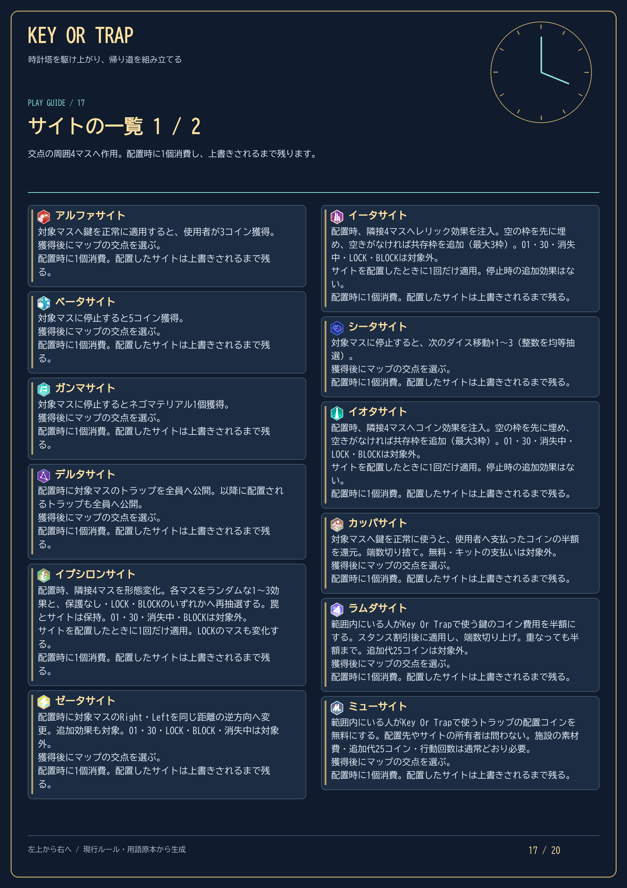
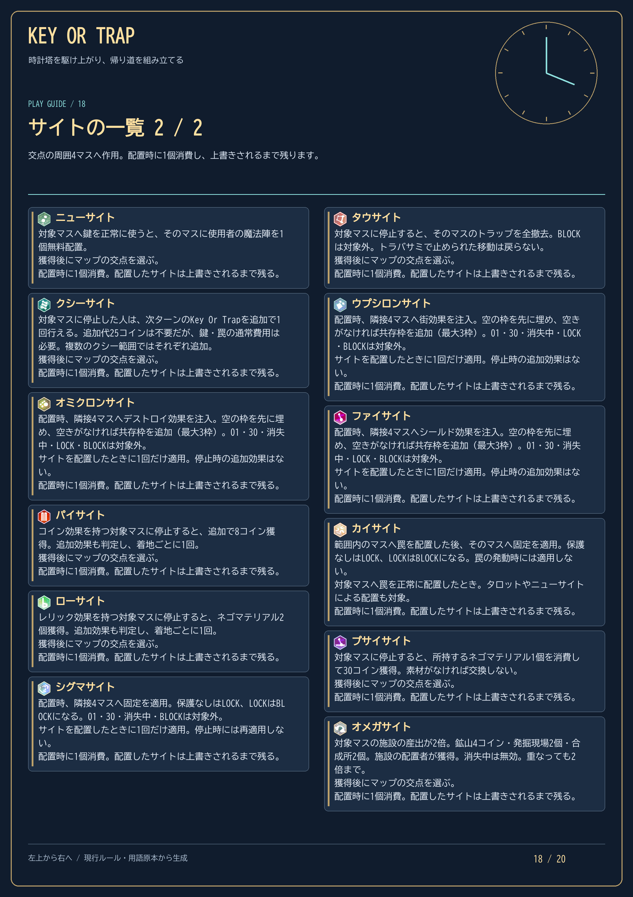
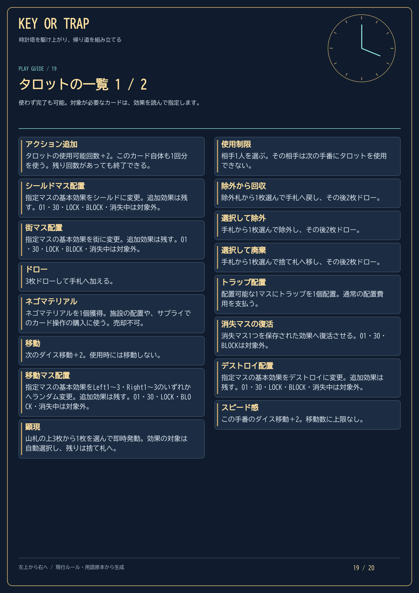
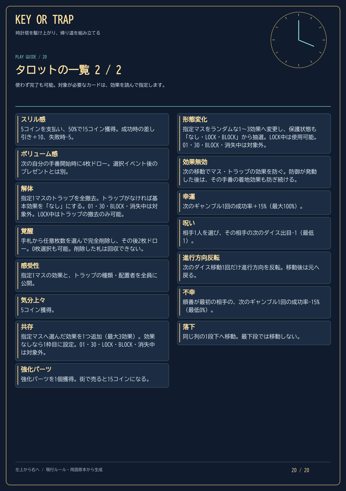

鍵と罠で盤面を組む
通常1回に加え、25コインで共通追加1回を予約。鍵・罠の費用は別で、全員の準備完了後に支払います。所持上限はコイン200・ネゴマテリアル20。画面で確定残高と予約後残高を確認できます。
鍵で道を変え、罠を組み合わせる。
01から出発し、30で折り返し、01への帰還を目指そう。
通常1回に加え、25コインで共通追加1回を予約。鍵・罠の費用は別で、全員の準備完了後に支払います。所持上限はコイン200・ネゴマテリアル20。画面で確定残高と予約後残高を確認できます。
タイトルの「戦術チュートリアル」では、定番の罠、収入の構築、自分だけ安全に通る方法、強力なコンボを用意された盤面で体験できます。
進行・移動・保護から、鍵・罠・貴重品・サイトを一覧できます。タロットは儀式のシンボル解放後の追加ルール。Key Or Trap後に1回抽選し、その順に本人がタロットを確定します。サプライのスタンス専売は1〜5コイン、1訪問につき1枚。3周ごとの無料補強はありません。全員終了後は同じ順でダイスへ進みます。
左上から右へ、1段ずつ下に読む20ページ・4列5段のマニュアルです。目次から選ぶか、画像を押して原寸で確認できます。
2026年10月26日更新（貴重品・配置時サイト・スタンス専売・現行の手番順に対応）





